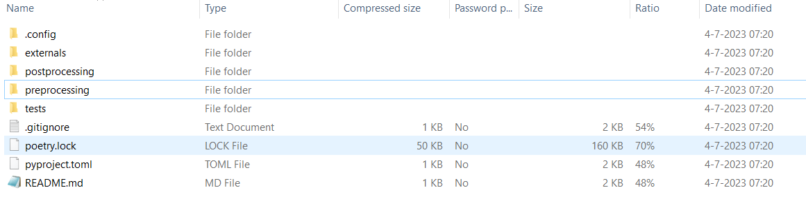
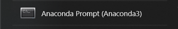

Preprocessing
Downloaden
De preprocessing wordt uitgevoerd met de Python library “VRUtils”. Deze is te downloaden via een ZIP-file. Pak de zip file met de VRTool preprocessing repository uit (bij voorkeur op een locatie met een korte padnaam). De ZIP-file bevat de volgende files:

Preprocessing installatie
Nadat de ZIP file is geopend en alle bestanden klaar staan moet nog een virtual environment worden geinstalleerd. Een virtual enviroment zorgt ervoor dat Python de juiste packages beschikbaar heeft en de code werkt. Volg de volgende stappen om een virtual environment aan te maken:
Stap 1: Open Anaconda Prompt

Stap 2: Verander de directory in Anaconda Prompt
Verander de directory naar de map waar de VRTool preprocessing repository is geplaatst met behulp van de volgende commandline. Vervang “C:/link_naar_ZIP_file_map” met de locatie van de map waar de ZIP file is uitgepakt.
cd C:/link_naar_ZIP_file_map
Stap 3: Creëer het environment:
conda env create -f .config\environment.yml -p .env
Stap 4: Activeer het environment:
conda activate .env/
Stap 5: Installeer benodigde packages:
poetry install
Let op
Bij Stap 5 lukt de installatie soms niet ineens, probeer het dan nogmaals:
poetry installAls er zich een probleem voordoet bij Stap 5 met de package
peewee, installeer deze dan handmatig door de volgende commandline in te typen:pip install peewee==3.16.2. Doe daarna nog eens:poetry install